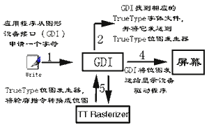
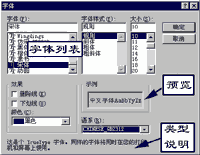
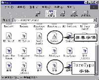
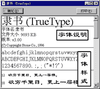
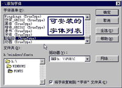

|
|
| 当前位置：电脑报电子版 > 1999 年 > 28 期 > 软件世界 > Windows 中的字体设置 |
| 《 Windows 中的字体设置 》 |
| ㈠TrueType字体显示过程 在Win95/98中，文字显示和打印普遍使用的标准字体都是TrueType字体。这种字体也称为轮廓字体，轮廓由一组指令构成，描述了字符的外形。TrueType字体易于使用、屏幕和打印输出效果一致，具有可匀展性、可移植性、与应用程序无关性，并且存储空间小。另外，我们经常使用到的字体还包括位图（点阵）、矢量、设备（如打印机固化字体）等字体。 ㈡在应用程序中设置选择字体 许多Win95/98的应用程序中，都使用标准的字体设置窗口来选择要使用的字体。在这个字体设置窗口，可以设置字体（如楷体）、字体样式（如倾斜）、字体大小（如五号字）。使用者还可以在该窗口中预览字样，查看字体类型。另外，还可以为字体添加效果、颜色。 ㈢查看系统字体 Win95/98提供了专门的字体工具软件，来查看、管理系统中安装的字体（系统中安装的字体文件都保存在Windows的Fonts目录中）。选择“开始/设置/控制面板”，在打开的控制面板窗口中双击“字体”图标，打开字体管理窗口。在这个窗口中，可以查看系统中的字体类型、可以按相似性来比较字体（帮助你是否删除类似字体），可以预览（双击某型字体）、打印（“文件/打印”）、删除（“文件/删除”）字体。 ㈣字体预览 在字体管理窗口，双击某种字体文件图标，即可弹出该字体的字型预览窗口，在窗口中列出了字体的一些信息，如字体文件大小、版本号、版权，并显示不同大小的英文、数字、符号或者中文字符。可以选择窗口上部的打印按钮将预览样式打印出来，方便以后选择字体。 ㈤安装字体 在字体查看管理窗口中，选择菜单“文件/安装新字体”，弹出安装新字体的程序窗口，你可以通过网络下载、购买等渠道获得你喜爱的字体，如瘦金体之类。选择准备安装的字体文件所在的驱动器，安装字体程序将自动扫描磁盘中是否有字体文件，并在“字体清单”窗口中列出。选择某种字体，点击“确定”，安装程序就将字体文件拷贝到系统字体文件夹，并在注册表中注册，然后就可以使用该种字体了。 |
| 下载本期推荐软件 | 页 首 |
| 《电脑报》版权所有，电脑报网站编辑部设计制作发布 |